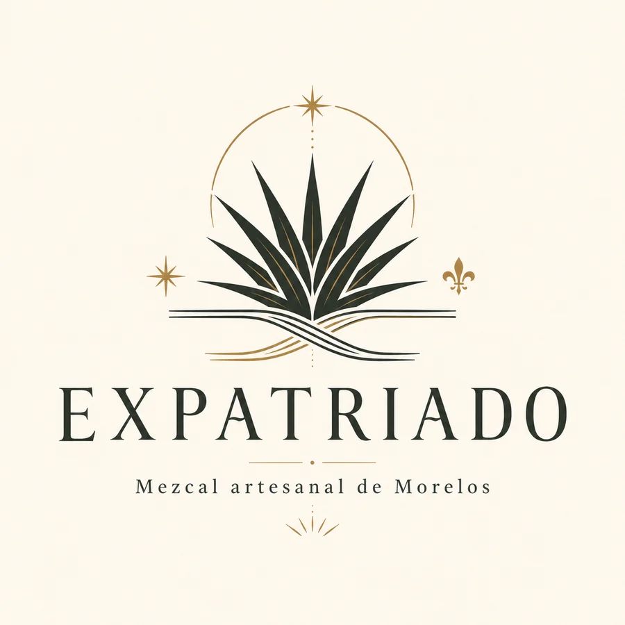
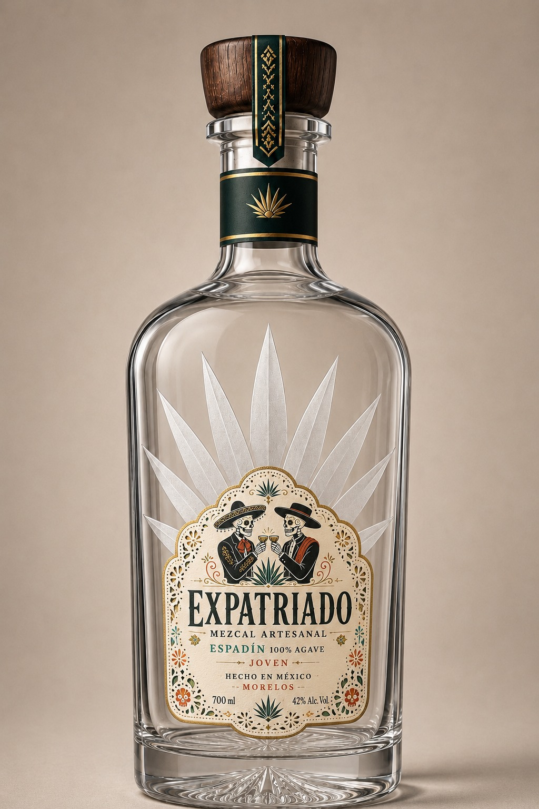

Territorio
Palpan de Baranda, Miacatlán, Morelos.
Consumo responsable
Esta página presenta una marca de bebida alcohólica. Para continuar, confirma que tienes edad legal para consumir alcohol en tu país.
México cruzando fronteras
EXPATRIADO nace para compartir una parte auténtica de la cultura mexicana mediante un mezcal premium, trazable y elaborado en colaboración con productores artesanales morelenses.

Premium accesible
Artesanal
Origen Morelos
Canal HORECA
Nuestra historia
EXPATRIADO representa la experiencia de vivir fuera del país de origen y mantener un vínculo profundo con la cultura propia. La marca surge de la historia de un mexicano en Europa que identifica el interés del consumidor europeo por México y decide traer una expresión auténtica de su tierra: el mezcal artesanal.
El nombre simboliza también el recorrido del producto: un destilado nacido en Morelos que cruza fronteras para convertirse en una experiencia cultural, gastronómica y sensorial en Europa.
Origen
El proyecto se apoya en la colaboración con Destilería Xonesco, ubicada en Palpan de Baranda, Morelos. Su proceso artesanal y su vínculo con el territorio permiten construir una propuesta diferenciada frente a marcas procedentes de regiones más saturadas en el mercado internacional.
Palpan de Baranda, Miacatlán, Morelos.
Colaboración directa con una destilería artesanal.
Origen verificable, proceso tradicional y trazabilidad.

Concepto visual provisional
Producto
La propuesta inicial se plantea en formato de 700 ml, con botella prefabricada premium para reducir inversión inicial y evitar el coste de un molde propio en la fase piloto.
Proceso artesanal
Un recorrido productivo que conserva la esencia del mezcal: agave, fuego, fermentación natural y doble destilación.
Selección del maguey espadín en su punto de madurez.
Cocción del agave en horno tradicional trunco cónico.
Desfibrado del agave cocido para liberar azúcares.
Fermentación natural sin levaduras añadidas ni aceleradores.
Doble destilación y cortes supervisados por el maestro mezcalero.
Canal profesional
EXPATRIADO se orienta inicialmente al canal HORECA premium: restaurantes mexicanos contemporáneos, coctelerías, hoteles boutique, vinotecas, tiendas gourmet y distribuidores especializados.
La marca no busca competir por volumen en gran distribución, sino construir valor mediante prescripción, catas, formación y una experiencia de consumo coherente con su origen artesanal.
Solicitar información profesionalContacto
Web provisional de presentación. Producto en fase de desarrollo y validación para el mercado español.